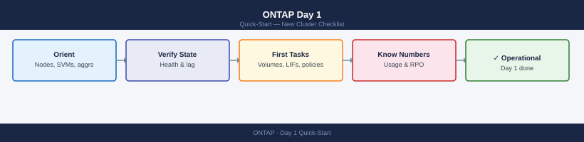

ONTAP Day 1 — New Cluster Checklist¶
Applies to: All products

1. Orient¶
Establish the basic topology before anything else.
# Cluster identity
cluster show
# Node list with versions
system node show -fields node,model,serial-number,uptime
# ONTAP version per node
system image show
# SVM list
vserver show -fields vserver,type,state,allowed-protocols
# Aggregate layout
storage aggregate show -fields aggregate,node,state,size,used-size,percent-used
Cluster: cluster1
UUID: 4a1b2c3d-5e6f-7g8h-9i0j-1k2l3m4n5o6p
Serial Number: 4082368-50-147258
System ID: 0537269999
Cluster Security Style: mixed
Cluster FIPS Mode: false
Node Model Serial Number Uptime
----------------- ----------- -------------- ---------------
node1 A400 321654987 98 days 14:32
node2 A400 321654988 98 days 14:28
Node Version
-------- -------
node1 ONTAP 9.13.1
node2 ONTAP 9.13.1
Vserver Type State Allowed Protocols
----------- ---------- -------- ------------------
cluster1 admin running rsh, ssh, http, https, ontapi, snmp
svm-prod data running cifs, nfs, iscsi, fcp
svm-backup data running nfs, iscsi
Aggregate Node State Size Used Size Percent Used
------------ ------ ------- ---------- ---------- -----------
aggr1 node1 online 10.00 TB 6.50 TB 65%
aggr2 node2 online 10.00 TB 4.20 TB 42%
aggr3 node1 online 5.00 TB 2.10 TB 42%
Common errors
Error: command not found: cluster show — Ensure you are connected to the ONTAP cluster via SSH or console and have admin-level privileges.
Error: This command requires a Data ONTAP Cluster Administrator or higher privilege level. — Log in with a user account that has cluster admin role or higher.
Record these facts:
| Item | Command | Note |
|---|---|---|
| Cluster name | cluster show |
Match DNS entry |
| Node count | system node show |
Note HA pairs |
| ONTAP version | system image show |
Flag if mixed versions exist |
| SVM count | vserver show |
Note data vs. admin vs. system SVMs |
| Aggregate count | storage aggregate show |
Check all aggregates are online |
2. First Health Checks¶
Run these checks in sequence. A failure at any step should be investigated before continuing.
Cluster Health¶
Cluster
Node Health Status
--------------------- ---- ------
ontap-node-01.lab.local true online
ontap-node-02.lab.local true online
2 entries were displayed.
Common errors
Error: command not found: cluster — Ensure you are connected to an ONTAP cluster via SSH or the ONTAP CLI, not a generic Linux shell.
Error: This command requires cluster administrator privileges — Log in with a user account that has cluster admin role permissions.
The Health column should show true for all nodes. Any false indicates an active problem.
System Health¶
System Health Status
Node Health Status
--------------------- -------
cluster1-01 healthy
cluster1-02 healthy
Cluster Health Status
Status Healthy
System Health true
Filesystem Health true
SAN Health true
NAS Health true
Alert ID Severity Node Alert Name
------------ -------- ------------- ----------------------------------------
alert-001 minor cluster1-01 NTP Server Unreachable
alert-002 warning cluster1-02 Disk Utilization Above 80%
alert-003 info cluster1-01 Configuration Backup Completed Successfully
Common errors
Error: This command is not supported on this platform — Verify you are connected to an ONTAP cluster (not a single-node system) and have appropriate admin privileges.
Error: Access denied for user 'admin' performing operation 'show' on object 'health' — Ensure your user account has the 'admin' or 'readonly' role assigned via security login show.
Status: ok is the target. Review any open alerts — they map to specific subsystems (SAS, network, RAID).
Aggregate Space¶
Aggregate Size Available Used%
--------- ----------- --------- ----------- -----
aggr0 2.0TB 1.2TB 40%
aggr1 5.0TB 2.1TB 58%
aggr2 3.5TB 0.9TB 74%
data_ssd 8.0TB 1.5TB 81%
backup_tier 10.0TB 4.2TB 58%
Common errors
Error: command not found: storage — Ensure you are connected to a NetApp ONTAP cluster via SSH or the ONTAP CLI, not a generic Linux shell.
Error: invalid field name "percent-used" — Use the correct field name percent_used (underscore instead of hyphen) or omit it and use the default output format.
Flag aggregates above 80% used. Above 90% is a hard risk for volume guarantee failures and snapshot deletion cascades.
Volume Space¶
Vserver Volume State Size Used Available Percent-Used
--------- ------------ ---------- ---------- ---------- ---------- ------------
svm_prod vol_data_01 online 500.0GB 287.3GB 212.7GB 57%
svm_prod vol_logs online 100.0GB 78.5GB 21.5GB 79%
svm_prod vol_backup online 2.0TB 1.8TB 234.5GB 89%
svm_dev vol_test online 250.0GB 45.2GB 204.8GB 18%
svm_dev vol_scratch online 1.0TB 12.3GB 987.7GB 1%
Common errors
Error: command not found — Ensure you are connected to the ONTAP cluster via SSH or the ONTAP CLI, not a Linux shell.
Error: invalid field name "percent-used" — Use the correct field name percent_used (underscore instead of hyphen) for your ONTAP version.
Note any volumes approaching their size limit or with autogrow disabled.
SnapMirror Lag¶
Source Path Destination Path Lag Time Status
========================== ========================== ======== ====================
svm1:vol_prod svm2:vol_prod_mirror 00:15:23 snapmirrored
svm1:vol_data svm2:vol_data_mirror 00:08:47 snapmirrored
svm1:vol_logs svm3:vol_logs_dr 02:34:12 snapmirrored
svm1:vol_archive svm2:vol_archive_mirror 12:45:33 snapmirrored
svm1:vol_temp svm3:vol_temp_mirror 00:22:05 snapmirrored
Common errors
Error: command not found: snapmirror — Ensure you are logged into the ONTAP cluster CLI (use ssh admin@<cluster-ip>) rather than the local shell.
Error: This command requires cluster administrator privileges — Log in with a user account that has cluster admin role or request elevated permissions.
Expected lag depends on schedule — for hourly replication, anything over 2 hours is worth flagging. Broken relationships show relationship-status: broken-off.
AutoSupport Last Sent¶
Node Type Severity Sequence Number Timestamp
--------------------------------- ------------- ------------- ----------------- ------------------------
cluster1-01 periodic normal 42857 Wed Oct 18 14:32:15 UTC 2023
cluster1-02 periodic normal 42856 Wed Oct 18 14:31:48 UTC 2023
cluster1-01 test normal 42855 Wed Oct 18 13:15:22 UTC 2023
Common errors
Error: command not found: system — Ensure you are connected to the ONTAP cluster via SSH or the ONTAP CLI, not your local shell.
Error: No matching resource found — Verify the cluster has at least one node online by running cluster show first.
If the last AutoSupport is more than 24 hours old, check connectivity and SMTP/HTTPS transport:
Node Transport Mail Hosts State
----------- --------- ----------------------------------- -------
cluster1-01 smtp mail.example.com,mail2.example.com enabled
cluster1-02 smtp mail.example.com,mail2.example.com enabled
cluster1-03 https support.netapp.com enabled
cluster1-04 https support.netapp.com enabled
Common errors
Error: command not found: system — Ensure you are connected to the ONTAP cluster CLI (SSH to the management LIF), not the local shell.
Error: Invalid field name "mail-hosts" — Use the correct field name mail-hosts (with hyphen); verify field availability with system node autosupport show -fields ?.
3. Know the Numbers¶
Capture these metrics in a site record or handoff document.
| Metric | Command | Healthy Range |
|---|---|---|
| Aggregate used % | storage aggregate show-space |
< 80% |
| Volume count | volume show -state online | wc -l |
Know your count |
| SnapMirror lag | snapmirror show -fields lag-time |
< 2× schedule interval |
| AutoSupport last sent | system node autosupport history show |
< 24 hours |
| Shelf/disk count | storage disk show | wc -l |
Matches expected |
| Spare disks | storage disk show -container-type spare |
At least 1 per shelf |
4. Common First Tasks¶
Create a Volume¶
volume create -vserver <svm-name> -volume <vol-name> \
-aggregate <aggr-name> -size 100G \
-junction-path /<vol-name> \
-snapshot-policy default \
-space-guarantee none
Volume <vol-name> created successfully on Vserver <svm-name>.
Volume UUID: 550e8400-e29b-41d4-a716-446655440000
Aggregate: aggr1
Size: 100GB
Space Guarantee: none
Junction Path: /<vol-name>
Snapshot Policy: default
State: online
Common errors
Error: command failed: No space left on device — Verify the aggregate has sufficient free space with storage aggregate show -aggregate <aggr-name> and increase aggregate capacity or reduce volume size.
Error: command failed: Vserver <svm-name> does not exist — Confirm the SVM name is correct and exists by running vserver show to list available SVMs.
Error: command failed: Aggregate <aggr-name> does not exist — List available aggregates with storage aggregate show and use a valid aggregate name in the command.
Verify:
Vserver Volume State Size Junction Path
--------- ------------ ---------- ---------- ---------------------
svm-prod data_vol_01 online 500GB /data/prod
svm-prod logs_vol_02 online 250GB /logs
svm-dev test_vol_03 online 100GB /test
svm-prod archive_vol online 2TB /archive
Common errors
Error: command not found: volume — Run this command from the ONTAP CLI (SSH to your cluster management IP) rather than a Linux/Windows shell.
Error: There is no entry with this name. — Verify the volume name is correct and exists on the cluster using volume show without filters first.
Create a LIF¶
network interface create -vserver <svm-name> \
-lif <lif-name> -role data \
-data-protocol nfs,cifs \
-home-node <node-name> -home-port <e0c> \
-address <ip> -netmask <mask>
Common errors
Error: command failed: Invalid vserver name — Verify the SVM exists with vserver show and use the correct name in the -vserver parameter.
Error: command failed: Invalid home-node or home-port — Confirm the node name and port exist by running network port show and ensure the port is available (not already in use).
Error: command failed: Invalid IP address or netmask — Validate the IP address format and netmask are correct, and ensure the IP is not already assigned to another LIF with network interface show.
Verify:
Vserver LIF Address Status-Oper Is-Home
----------- -------------------- ------------------- ------------ --------
svm-prod svm-prod_mgmt 192.168.1.50 up true
svm-prod svm-prod_data01 10.0.1.100 up true
svm-prod svm-prod_data02 10.0.1.101 up false
svm-prod svm-prod_nfs 10.0.2.50 up true
svm-prod svm-prod_iscsi 10.0.3.75 down false
Common errors
Error: "svm-prod" is not a valid value for "-vserver" — Verify the SVM name exists with vserver show and use the exact name from the Vserver column.
Error: unknown field "status-oper" — Use the correct field name status-admin or status-oper depending on ONTAP version; check available fields with network interface show -fields ?.
Set Up a Snapshot Policy¶
Create or assign a policy to a volume:
# List existing policies
volume snapshot policy show
# Assign an existing policy to a volume
volume modify -vserver <svm-name> -volume <vol-name> -snapshot-policy <policy-name>
# Create a new policy
volume snapshot policy create -policy <policy-name> -enabled true \
-schedule1 hourly -count1 24 \
-schedule2 daily -count2 7 \
-schedule3 weekly -count3 4
Policy Enabled Schedules
---------------------------------------- -------- ---------
default true hourly, daily, weekly
hourly true hourly
daily true daily
weekly true weekly
(no output — command completes silently)
Policy "backup-policy" created successfully with 3 schedules.
Common errors
Error: Vserver "svm-prod" does not exist. — Verify the SVM name with vserver show and use the correct name in the -vserver parameter.
Error: Volume "vol_data" does not exist on Vserver "svm-prod". — Confirm the volume exists on the specified SVM using volume show -vserver <svm-name> before modifying it.
Error: Snapshot policy "backup-policy" already exists. — Use a unique policy name or delete the existing policy with volume snapshot policy delete -policy <policy-name> before creating a new one.
See Also¶
- ONTAP Cheat Sheet — top CLI commands
- NetApp ONTAP Architecture
- ONTAP Health Check Runbook
- Pure FlashArray Day 1 — if Pure is also in the environment